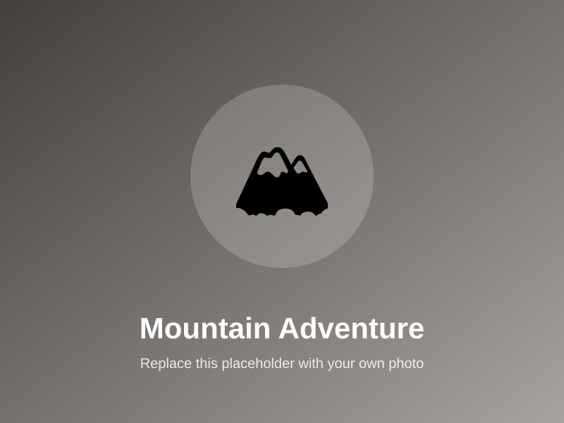
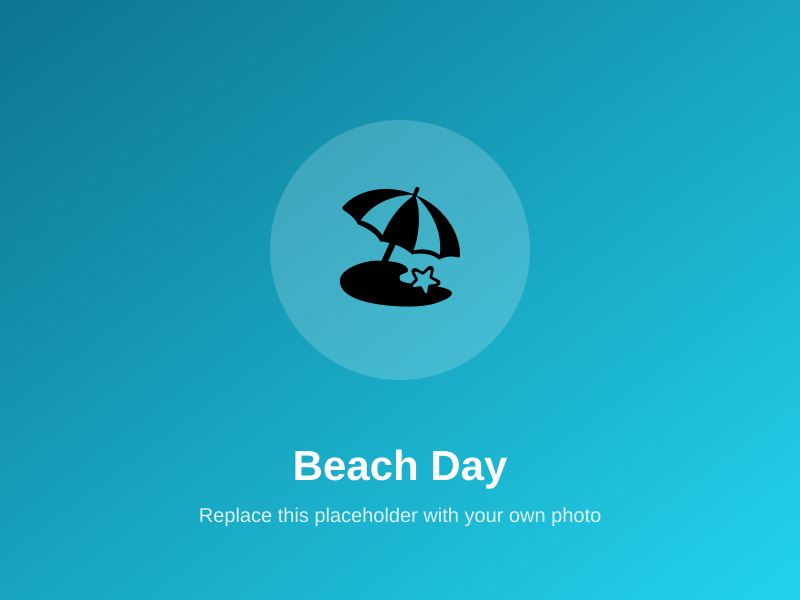
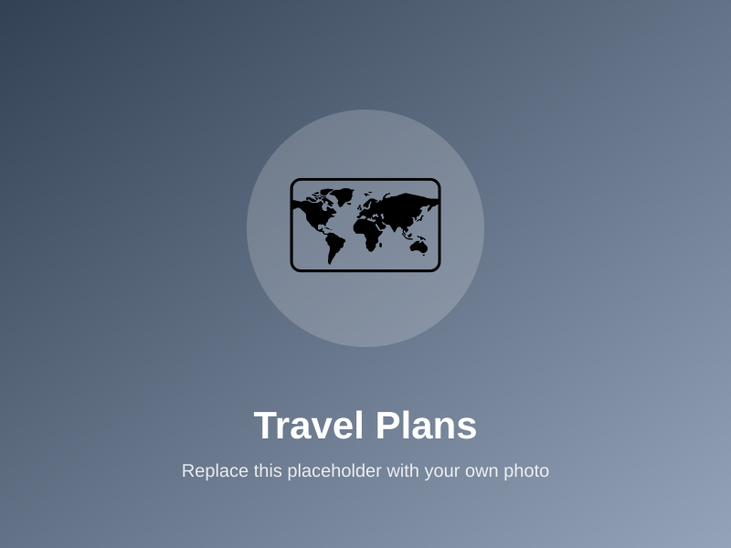

🏔️ Mountain Adventures
My favorite trips are the ones that end at the top of a mountain. The view is the reward, but the climb is the memory.
The places I have been and the ones I dream about. For me, travel is the best education — every destination changes how I see the world.

My favorite trips are the ones that end at the top of a mountain. The view is the reward, but the climb is the memory.

Give me a beach, good weather, and time with family and I am completely happy. Simple trips like these are the ones I remember most.

I love walking through a new city with no plan — trying the food, watching the people, and seeing how businesses there are run.
These are the places at the top of my list for the next few years. My long-term travel goal is to visit at least one new country before I graduate — and to see ten countries before I turn thirty.

I keep a running list of destinations, roughly how much each trip costs, and the best season to go. Planning the trip is half the fun for me — a very business-student way to travel!
Every trip has taught me something: how to plan, how to adapt when things go wrong, and how to talk to people whose lives are completely different from mine.
Next on my list: a road trip with friends to visit a few national parks, and saving up for my first big international adventure.